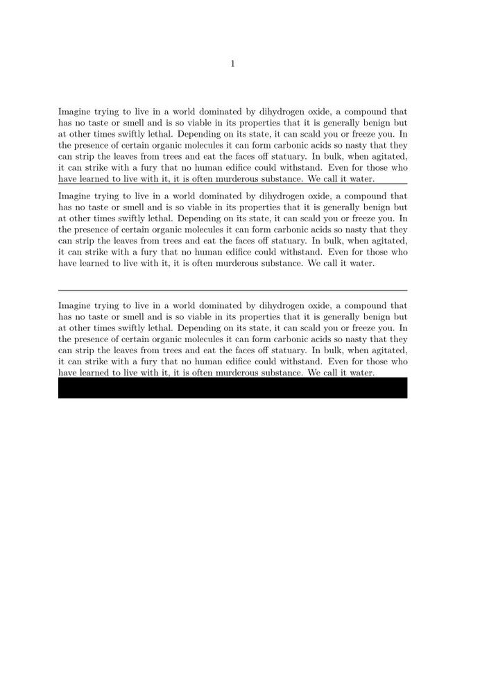

Syntax (autogenerated)
Syntax
| \hrule |
Description
Place a rule as wide as the text, with a height of 0.4 point. Ends the current paragraph.
If you want a different rule thickness, you only need to specify it with \hrule height and the dimension.
Example
-
\setuppapersize[A5] \setupwhitespace[big] \starttext \input bryson \hrule \input bryson \blank[2*line] % don't know why the first blank line gets ignored \hrule \blank[line] \input bryson \hrule height .25in \stoptext
- 
See also
- \hairline for a blank line with a rule on its baseline
Help from ConTeXt-Mailinglist/Forum
All issues with: